|
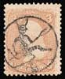 | Devilish Post |
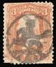 |
On June 1st, 2004 Mr. Tracy Barber, in his own words, "couldn't resist" and proposed on the newsgroup news:rec.collecting.stamps.discuss the cartoon shown below. So I couldn't resist either (I can resist everything excepting for temptation) and I put together this page, dedicated to devils on postal stamps. Thanks God, I haven't found many of them in my collection, but I could complete the page with the friendly help of other RCSD participants.
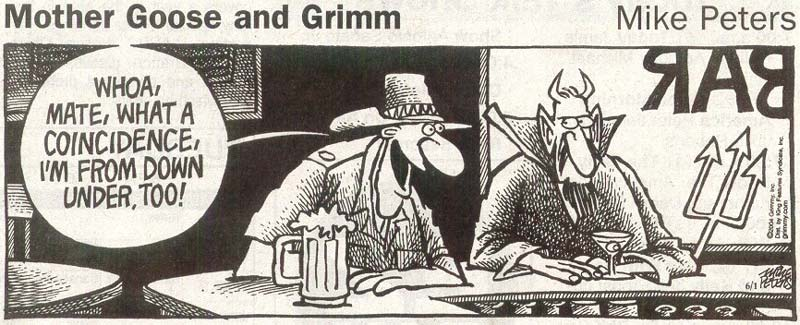
Satan
(from Hebrew - pronounced Satan, Satan and Aramaic - pronounced Sitnâ, Sitna:
both words mean "Adversary; accuser") is an angel, demon, or minor god in many
religions. Satan plays various roles in the Hebrew Bible, the Apocrypha and
the New Testament. In the Hebrew Bible Satan is presented as an angel
(messenger) sent by God to test mankind; in the Apocrypha and New Testament
Satan is portrayed as an evil rebellious demon who is the enemy of God and
mankind.
Satan is generally viewed as a supernatural entity who
is the central embodiment of evil. Satan is also commonly known as the Devil,
the "Prince of Darkness", Beelzebub, Mephistopheles, or Lucifer. In the Talmud
and some works of Kabbalah Satan is sometimes called Samael ; however most
Jewish literature is of the opinion that Samael is a separate angel. In the
fields of angelology and demonology these different names sometimes refer to a
number of different angels and demons, and there is significant disagreement
as to whether any of these entities is actually evil. In Islam, Satan is known
as Iblis, who was the chief of the angels until he disobeyed Allah by refusing
to prostrate himself before Adam.
Particularly in the Medieval period, Satan was often depicted as having horns
and a goat's hindquarters. He has also been depicted as carrying a pitchfork,
and with a forked tail. None of these images seem to be based on Biblical
materials. Source:
http://www.wordiq.com/definition/Satan
As part of the European philatelic initiative "Stories and Legends", Switzerland issued on the 13th of May, 1997, the stamp: The Legend of the Devil's Bridge". The FDC was "mastered" by the author of this page.
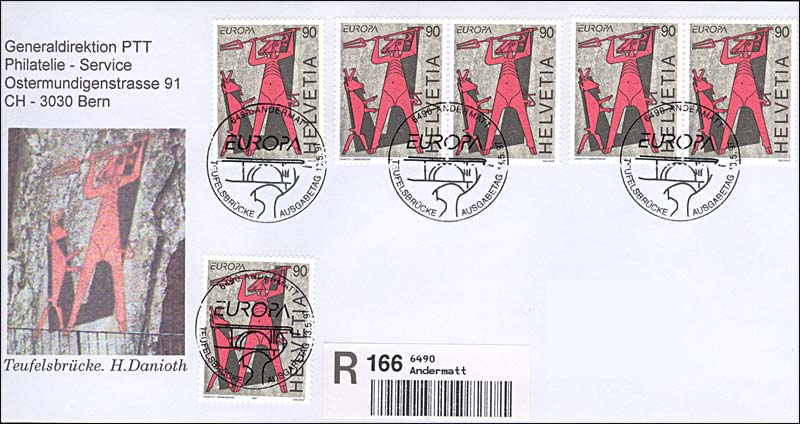
The Tasmanian Devil, issued in 2006 by Australia, prefers eating dead animals, and he is often screaming. On the set issued by Vatican City on April 8, 1994, and dedicated to the restored Sistine Chapel (frescoes of Michelangelo), the pair Scott 949a shows one of the mostly known incarnation of the Devil, the tempting serpent.
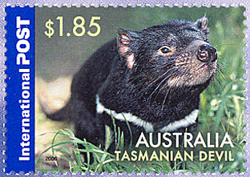 |
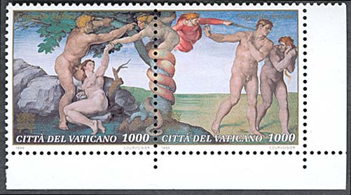 |
From Norway, HELL (Hell is a village in Stjørdal, Norway), to Australia with philatelic love. The theme of devilish temptation is presented on the painting of Lucas Cranach. Satan, the serpent, is convincing Eve to eat from the forbidden fruit. The stamp was issued on November 3, 1986 by the Czechoslovakian postal administration.
|
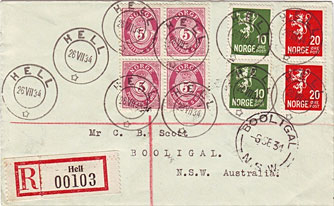 |
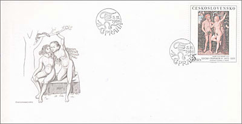 |
The Postal Administration of Canada has issued on 1st of October 1991, as part
of the Folklore series, a stamp with the title: Witched Canoe. The stamp was
designed by Ralph Tibbles. The series is based on illustrations by Allan
Cormack and by Deborah Drew-Brook.
The Witched Canoe/Chasse-galerie tale comes from Québec.
Young boys hired by lumber firms had to spend New Year's in the bush when they
would have preferred to be celebrating back home. But if the proper
incantations were spoken, the Devil would make the canoe fly through the air
at an incredible speed. The peril was that if during the trip the canoe
touched a cross or anyone spoke the name of God, their souls would be forfeit
to Satan. The return trip was the most eventful with a drunken sternsmen at
the helm. The wild ride usually ended with the canoe slamming into a tree at
camp, but without injury. Next spring, going home, the storyteller would reveal
that the women he had risked his soul for, had married someone else. Source:
Canada Post Corp. Canada's Stamps Details, No. 3, 1991, p. 11-13. Credits:
Many thanks to Blair Stannard from Canada for the scan and the data.
| 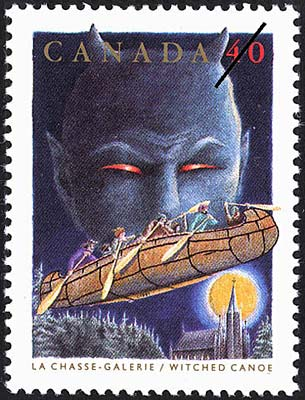 |
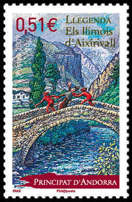 |
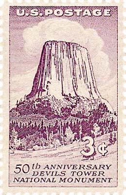 |
In the middle, "The Devils of Aixirivall", issued by Andorra on 3rd of March 2009. The image on the stamp above, on the right, looks familiar to millions of people worldwide (and especially to movie fans), thanks to Steven Spielberg's 1977 classic "Close Encounters of the Third Kind". The tower was in the movie the meeting place for thousands of people who came, in a way or other, in contact with aliens. The nearly vertical monolith, known as Devils Tower, rises 1,267 feet above the meandering Belle Fourche River ( Nice Pitchfork/Trident River, French). It is a sacred site for many American Indians. The President Theodore Roosevelt proclaimed on September 24, 1906 this monolith as the nation's first national monument. Fifty years later ( Sept. 24, 1956, Scott 1084) the US postal administration issued a stamp commemorating a Federal Law for protection of natural antiquities.
|
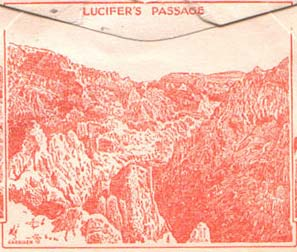 |
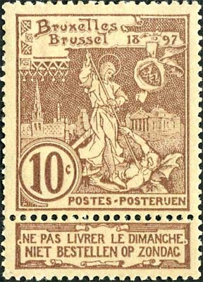 |
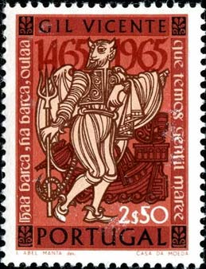 |
The bad Satan is punished by St. Michael on a Belgium stamp from 1897. Satan eventually tried to deliver a letter on Sunday. An interesting character from a play of Gil Vincente appears on the Sc. 966 from Portugal, issued on December 1, 1965 (above, on the right).
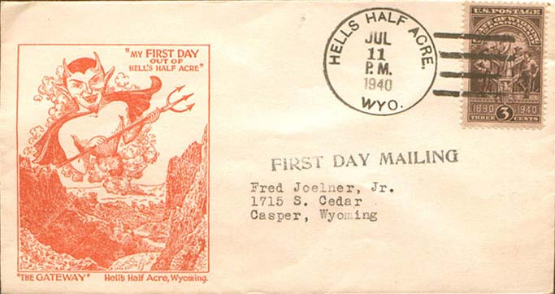
USA.1940, July 11. A smiling devil on the First Day of mail out of Hell's Half Acre, Wyoming. An excerpt from the back of this cover (Lucifer's Passage) is shown on the left of the Portugal stamp. Below, on the right, one can see that 100 years ago the women's life was as full of dangers as it is today. On the left, the Mozambican sheet of 2001 introduces us to a devilish rite.
|
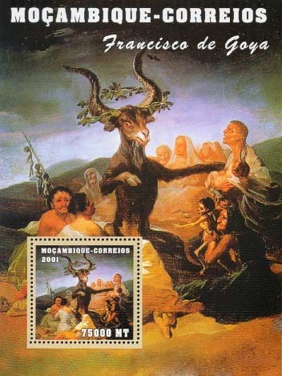 |
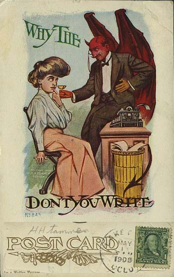 |
Below, from left to right. USA, 2000, Kill Devil Hills, cancel, North Carolina. UK, 1998, Devil's bolete (even a devilish mushroom can be endangered). Van Dieman's Land, cinderella. USA, 1995, Red Devil, cancel, Alaska.
|
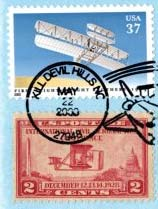 |
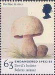 |
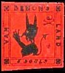 |
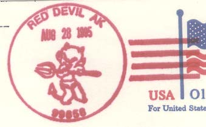 |
And last but not least, please take a look at the miniature sheet issued by the postal administration of the Spanish North Africa on the 8th of January 2004, and dedicated to the Russian writer Michail Bulgakov. The three characters in the background on the stamp on the left are the devils who haunted the communist Moscow in the 1930s. It is one of them (Azazello) who transformed the beautiful Margarita in a witch (the stamp on the right).

Anyway, it seems to be a good idea to follow the advice of Julien Green (in the preface to his novel "Si j'etais vous" - "If I were you") and to cross over the street if you meet, by chance or not, Brittomart, one of so many names of the Satan. Just that sometimes it isn't easy to recognize HIM...
Link to my page dedicated to Dracula (from Dracul = Devil, in Romanian).
Credits: to my friends in philately Blair, Tracy, Tom and Rodney, participants in the RCSD newsgroup.
| Published:
06/02/2004. Revised: 06/23/2010 Copyright © 2004- 2010 by Victor Manta, Switzerland. All rights reserved worldwide. |
|